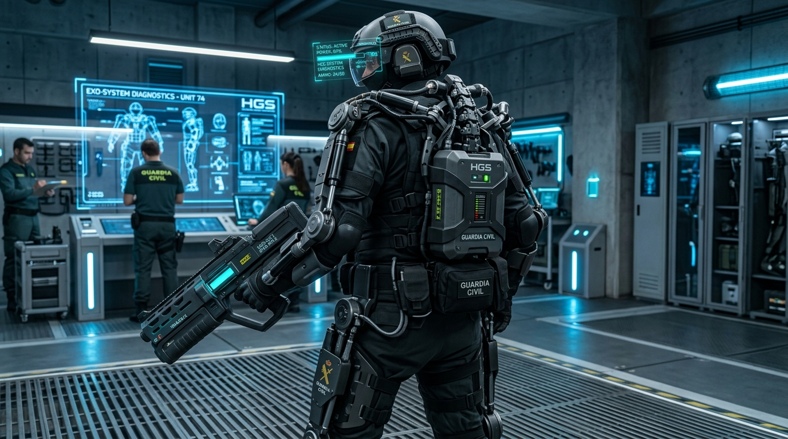

El Escudo Cotidiano de la Metrópolis
Mientras que los Pretorianos encarnan el brazo de respuesta táctica ante amenazas mayores, la verdadera columna vertebral de la estabilidad social en Humania reside en la Guardia Civil. Este cuerpo de seguridad regular patrulla incansablemente las avenidas monumentales, los complejos residenciales, las estaciones de transporte hiper-orbital y los centros de producción biotecnológica.
Su doctrina se basa en la Presencia Disuasoria y el Control de Proximidad: agentes humanos altamente disciplinados que operan en perfecta simbiosis con la Red A.N.I.M.A. gracias al soporte biomecánico de exoesqueletos motorizados de última generación.
"El orden no es un decreto que se impone en tiempos de crisis; es una coreografía diaria que se cultiva paso a paso en cada esquina de nuestra ciudad."
Patrullaje Urbano y Vigilancia Sincronizada
En cuadrillas de tres a cinco efectivos acompañados por micro-drones centinela, la Guardia Civil garantiza que el flujo de ciudadanos, transportes y suministros nutricionales (Solaris y Velvet) transcurra con absoluta fluidez y sin fricciones sociales.

Despliegue Urbano en Vía Aurelia — Distrito Central
Efectivos regulares en formación de avanzada con exoesqueletos tácticos HGS-74, visores de reconocimiento facial CNB y enlace holográfico con la central de tráfico metropolitana.
Ingeniería Cívica: El Exoesqueleto Modelo HGS-74
A diferencia de la pesada armadura cerámica de asalto Leviatán de los Pretorianos, el Exoesqueleto HGS-74 Aeterna de la Guardia Civil fue concebido como un arnés biomecánico ergonómico y ágil. Compuesto de aleaciones ligeras de duraluminio-carbono y servomotores neumáticos de alta precisión, multiplica la fuerza física del agente sin restringir su movilidad ni su capacidad de interacción empática con el ciudadano.

Exoesqueleto Táctico HGS-74 Aeterna (Banco de Pruebas)
Columna vertebral biomecánica reforzada con paquete de energía dorsal de 24 horas de autonomía, amortiguadores hidráulicos de rodilla y rifle disuasorio de pulsos sinápticos no letales.
Pilares del Servicio Regular de Seguridad
El desempeño de la Guardia Civil se apoya en cuatro capacidades tecnológicas estandarizadas:
Asistencia Motriz Continua
Soporte de carga de hasta +180 kg y absorción de impacto cinético para turnos de patrullaje prolongados sin fatiga muscular.
Rifles de Dispersión Sináptica
Armamento modular calibrado para emitir pulsos disuasorios aturdidores sin daño letal permanente.
Escáner Biométrico Facial CNB
Identificación instantánea de compatibilidad neural y estado de inmunización en multitudes a más de 50 metros.
Soporte Aéreo de Micro-Drones
Enlace satelital continuo con orbes de reconocimiento para mapeo térmico y anticipación de aglomeraciones.
Doctrina de Seguridad: Fuerzas Regulares vs. Fuerzas Especiales
Humania Global Systems mantiene una estricta división de competencias para asegurar la convivencia pacífica:
| Parámetro | Guardia Civil (Fuerzas Regulares) | Los Pretorianos (Fuerzas Especiales) |
|---|---|---|
| Propósito Principal | Patrullaje urbano, control de tráfico y orden civil | Supresión de amenazas mayores e incursiones |
| Indumentaria | Exoesqueleto ligero HGS-74 + Uniforme Cívico | Armadura Leviatán Grado Marfil V-9 pesada |
| Armamento Insignia | Carabinas de pulsos no letales & Escudos antidisturbios | Lanza de Resonancia Bio-Digital (HGS-Core) |
| Presencia | Permanente en todos los cuadrantes de la urbe | Despliegue selectivo de respuesta rápida (U.R.R.) |
| Lema | Ordo et Fidelitas Civica | Voluntas Pro Pace |